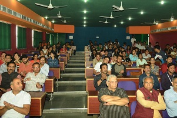
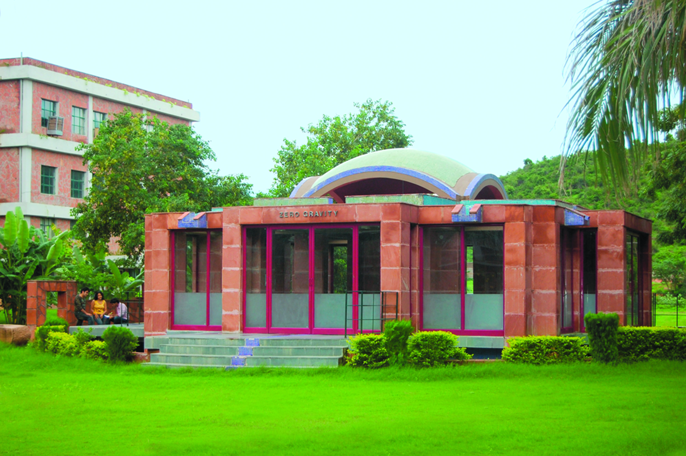
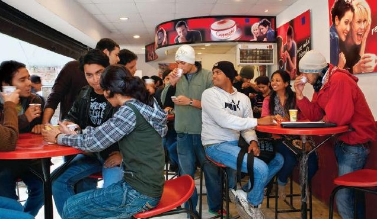
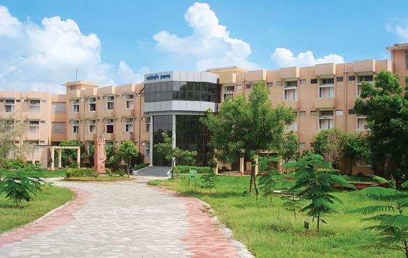
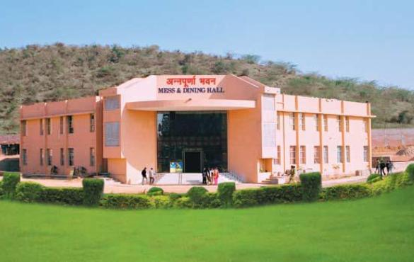

Infrastructure

Auditorium
The in-house facilities will include a well planned 1,500 seater modern auditorium. Four modern conference halls of various sizes at ITM Campus are operational.

Meditation Centre (Zero Gravity)
Meditation centre inheriting the concept of zero gravity helps the fraternity of ITM to achieve this objective with a focal theme - 'It is important to know what you know but it is more important to know what you do not know.'

Coffee Points
Apart from structured teaching and learning schedules, the institute has provided platforms for relaxation, exchange of views, and free discussions among students and faculty alike by establishing coffee points.
Sports Complex
The institute has developed a state-of-the-art sports complex having the facilities for basketball, hockey, football, cricket, indoor games, and an ultramodern gym. High tech stages for performing arts are also being constructed.
ATM Facility
Just close to the main gate of ITM State Bank of Indore has its ATM facility which is accessible by all major debit/credit cards.
Internet Facility
The computer labs with exclusive leased line connectivity to internet and intranet have more than 1400 PCs with number of broad band connections as back up, and flexible time schedules to suit students and faculty members. Air-conditioned & air-cooled seminar halls of various capacities ranging from 45 to 250 are available in every block to facilitate better quality interactions with academicians and to have long sessions of symposias and seminars.
Trasnport Service
The institute has transport facilities for all the students and faculties for almost each and every possible route. Each student is insured compulsorily under road traffic accident policy under group insurance scheme introduced by RGPV, Bhopal.

Hostel

Mess & Dining hall
Hostel:
One of the key contributors to an intensive & effective learning experience is living in campus. A boys & Girls hostel is located within the campus from the institute. The hostel is well equipped with basic recreation & indoor sports facilities that provide students with homely atmosphere to strengthen the feeling of belonging. A semimechanised and hygienic mess & dinning facility accommodating 600 persons at a time has also been created. Transport facility is provided to hostlers for outings to the city.
Gym & Health Club:
Only healthy body can support healthy mind’ is a well tested proverb for all time. To put this into practice the institute has established a state-of-art gym & health club in an area of around 11000 sq. ft. It’s a unique facility not available elsewhere in the whole State. The club has 31 workstations of highest quality comprising of jogger/Cycle/Leg pull machine/Abdominal/ Butterfly/Leg press/Shoulder press/Bench press/Twister/Wrist Curl with multigym facility supported by requisite audio system. Gym is also supported by locker facility to keep their belonging for regular users.
Residential Accommodation For Faculty:
A well equipped residential complex has been constructed having independent apartments furnished with modern amenities.
Guest House:
A well furnished Institute Guest House is attached with faculty residences to accommodate guest faculty and prominent personalities visiting the institute. It provides a homely ambience and environment.
Security:
The institute has employed round-the clock security stationed on campus. Apart from providing the security of the campus it also renders its services to provide all possible support to the residents for their safe and comfortable living.
ITM Multispecialty Hospital :
ITM has an Multispecialty Hospital with a view to facilitate a holistic development of mind & body for an all round progress of our students. The Hospital, thus, provides preventive, promotive as well as curative health care services with a view to ensure positive health for all the members of ITM family. A full time specialist doctor who conducts the regular health check-ups and provides medical attention as and when needed. ITM Multispecialty Hospital has a well equipped nursing cell with latest equipments apart from ambulance facility which is available round the clock.